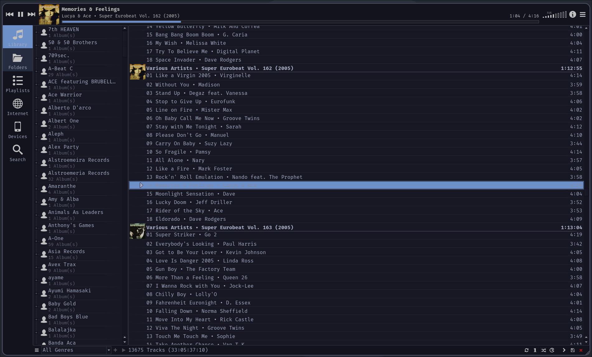

Apparently this is really hard, every youtuber/influencer type I've seen trying out NixOS has always complained that this is a pain point
of the distro. I can't remember how it was starting out for me but I'd guess I'm no less dumb than them and had the same issues.
This is how I do it right now.
The structure
Each list item is a nix module, i.e. a pure nix function returning an arbitrary attribute that gets appended to the configuration
in the modules import section of the flake. Arguments can be passed to these functions acting as imports, that is how gBar and catppuccin
gets imported into home-manager down below
flake.nix
Global system modules
bootloader
locale
system packages list
uncategorized system configuration
users
mpd
hardware-configuration.nix (the autogenerated one copied here)
Home Manager module (has submodules)
All of my home manager modules here, including flakes imported in the inputs section of the system config flake.
They then get exposed to all the other modules in home-manager letting you write a gBar.nix file using the gBar flake.
This is kind of confusing as that is typically not how programming languages work.
You can also add options to home-manager directly here, I don't know what the difference is in practice as to adding
the options in separate expressions.
I don't know if this structure is good, I figured out how to do this by reading the configurations of other people and the NixOS wiki
is absolutely worthless at teaching you anything except for on minor program's configuration options.
MPD
As any self-respecting individual I download all my music as local files, streaming services are absolute hell and for music it is the
worst out of any media. Algorithms that force you to listen to crap songs you don't want to hear compressed to low bitrates so that
they can fit over their crappy server infrastructure. But this leads to you instead needing to manage a sprawling mess of subdirectories
on an already disorganized slow mechanical hard drive which in my case is on my main computer (not optimal to say the least).
I've tried out various ways to manage my large music collection, some of those include the following.
They all suck for different reasons
Plex
Plex sucks, it's proprietary and costs a fortune I can't afford to spend, as buying music on bandcamp is already expensive enough.
In addition I found it had lots of garbage in it, acting as more of a hybrid between jellyfin and netflix.
Jellyfin
This was actually a pretty good experience, setting up the server on a raspberry pi was easy and for movies and tv shows
the experience was flawless. I found though that for music listening it was more lacking. There were no good apps on ios for
listening to music that also allowed for downloading songs/playlists locally that did not crash. Swiftfin was a decent enough
experience but lacked the local downloading part. Finamp is garbage, you're better of port-forwarding the entire server than that.
Strawberry
Used this for a long time and was fine, requires you to copy your files manually to your phone, I've continued doing this as there
are no good ways of syncing automatically that I've found. IOS music player
DeaDBeeF
Basically the same as Strawberry, just that it has a much more customizable interface and is generally better than strawberry.
Issues with this is that it has no ability to add songs between playlists, there is probably a plugin for this that I've yet to find.
MPD
It is fast as fuck, manages my library in a mostly comprehensible way and allows me to both use the auto generated library and
browse through folders in the mpd vfs, this was the main pain point with strawberry. Also many different choices for clients is nice.
The only thing I'd wish of it is that you could easily stream to diffrent devices on your local network, there seems to be ways
of doing this but it's not obvious nor well supported.
Setting up MPD on NixOS
Setting up MPD was not neccesarily straight forward. MPD does not work while running as a root user so you first of all need to set it
up to start as your normal user (this is all pretty straight forward in the NixOS module). You also need to change the runtime directory
of the systemd module to whatever your user runtime directory is so that mpd finds the pipewire socket. I recommend to use the pipewire
output if you're on wayland.
Using the string conversion of the user id on the bottom only works if you have set the uid property manually of your user.
Otherwise the uid will be set automatically at startup every time and you'll get some cryptic error message from MPD.
If uid is not set typically the selected id is just 1000 if you've only got one main user and setting it to that just works.
I have not yet experimented with any plugins as I've just started with mpd, if i use any I'll write it here.
MPD Clients

Cantata MPD client running.
I have not used many clients yet but cantata is really nice. It has plenty of options and allows for some simple tag management.
Although I prefer Picard for that. MPC also has a really nice cli interface but it is cumbersome to use that as a main interface with
MPD. NCMPCC appeals to me for it's simplicity although i found it also was a bit cumbersome to use as you always need to load the songs by
filepaths and those get really long quickly when the library is properly organised which mine isn't but I still have long paths.